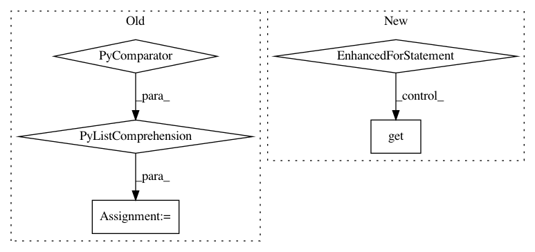

de37b10f2cbe01bee7baedbab37f485a6e7246aa,deepvariant/docker/gcp_deepvariant_runner.py,,_run_make_examples,#Any#,193
Before Change
threads.close()
threads.join()
// Ensure exceptions are re-thrown.
_ = [result.get() for result in results if result]
def _run_call_variants(pipeline_args):
Runs the call_variants job.
After Change
threads.join()
// Ensure exceptions are re-thrown (ignore socket.timeout errors from dstat
// calls).
for result in results:
if result:
try:
result.get()
except socket.timeout:
logging.warning("Ignoring socket timeout exception.")
def _run_call_variants(pipeline_args):
Runs the call_variants job.
num_workers = min(pipeline_args.call_variants_workers, pipeline_args.shards)
shards_per_worker = pipeline_args.shards / num_workers
In pattern: SUPERPATTERN
Frequency: 3
Non-data size: 5
Instances
Project Name: google/deepvariant
Commit Name: de37b10f2cbe01bee7baedbab37f485a6e7246aa
Time: 2017-12-04
Author: no-reply@google.com
File Name: deepvariant/docker/gcp_deepvariant_runner.py
Class Name:
Method Name: _run_make_examples
Project Name: ray-project/ray
Commit Name: 7a78f4e95960bf8560b0547802f171e2b40e4f6b
Time: 2021-01-26
Author: zhisbug@users.noreply.github.com
File Name: python/ray/util/collective/tests/util.py
Class Name:
Method Name: create_collective_workers
Project Name: google/deepvariant
Commit Name: de37b10f2cbe01bee7baedbab37f485a6e7246aa
Time: 2017-12-04
Author: no-reply@google.com
File Name: deepvariant/docker/gcp_deepvariant_runner.py
Class Name:
Method Name: _run_call_variants